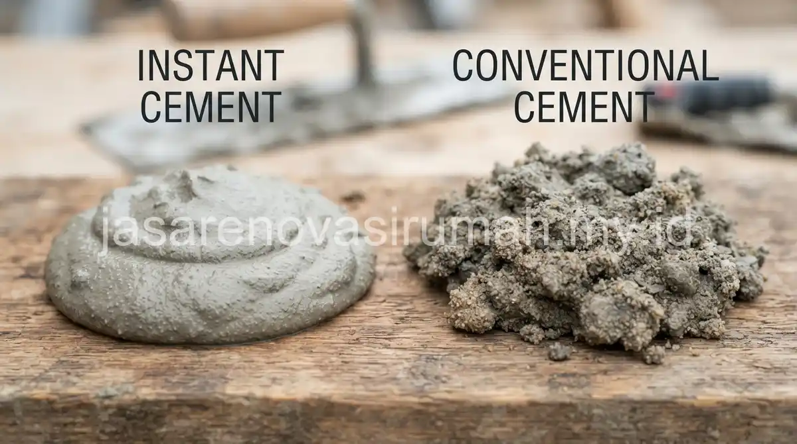

Semen instan (mortar) dirancang khusus dengan campuran pasir halus dan bahan aditif yang membuat daya rekatnya lebih optimal untuk bata ringan, sementara semen biasa dicampur pasir kasar secara manual dan lebih umum digunakan untuk bata merah konvensional.
Pemilihan salah satu jenis semen ini akan memengaruhi kekuatan dinding, kerapian hasil pasangan, serta efisiensi waktu pengerjaan di lapangan.
Apa Perbedaan Utama Semen Instan dan Semen Biasa untuk Bata Ringan?
Perbedaan utamanya terletak pada komposisi campuran, di mana semen instan sudah diformulasikan pabrik dengan pasir halus dan aditif perekat, sementara semen biasa memerlukan pencampuran manual dengan pasir di lokasi proyek.
Berikut perbandingan karakteristik keduanya:
| Aspek | Semen Instan (Mortar) | Semen Biasa |
|---|---|---|
| Komposisi | Pasir halus + aditif pabrikan | Semen + pasir kasar campuran manual |
| Ketebalan aplikasi | Lebih tipis, sekitar 3 milimeter | Lebih tebal, sekitar 10-15 milimeter |
| Kerapian hasil | Permukaan lebih rata dan presisi | Tergantung keahlian tukang |
| Kecepatan pengerjaan | Lebih cepat karena tidak perlu mencampur pasir | Lebih lambat karena proses pencampuran manual |
Semen instan pada dasarnya memang dirancang untuk aplikasi bata ringan yang memiliki ukuran presisi pabrikan, sehingga sambungan antar bata bisa lebih rapi dibanding menggunakan semen biasa yang lebih cocok untuk bata merah dengan ukuran bervariasi.
Mana yang Lebih Kuat dan Tahan Lama untuk Pasangan Dinding?
Untuk pasangan bata ringan, semen instan umumnya menghasilkan daya rekat yang lebih optimal karena formulanya memang disesuaikan dengan karakteristik permukaan bata ringan yang halus dan berpori kecil.
Semen biasa tetap bisa digunakan untuk bata ringan, namun daya rekatnya cenderung kurang maksimal dibanding semen instan karena tekstur pasir kasar tidak sepenuhnya menyatu dengan permukaan bata ringan yang halus.
Hal ini berpotensi menyebabkan pasangan dinding lebih rentan retak rambut di kemudian hari, terutama jika komposisi campuran tidak tepat. Kekuatan dinding secara keseluruhan tetap bergantung pada kualitas pengerjaan tukang, bukan hanya jenis semen yang dipilih.
Berapa Perbedaan Harga dan Efisiensi Penggunaan Keduanya?
Semen instan umumnya dijual dengan harga per sak yang lebih tinggi dibanding semen biasa, namun penggunaannya lebih efisien karena aplikasinya lebih tipis dan tidak memerlukan campuran pasir tambahan.

Pertimbangan biaya total sebaiknya tidak hanya melihat harga per sak semata, tetapi juga memperhitungkan efisiensi volume pemakaian dan kecepatan pengerjaan yang berdampak pada biaya upah tukang.
Untuk gambaran lebih lengkap mengenai komponen biaya material dalam pembangunan rumah, Anda bisa mempelajari panduan biaya bangun rumah per m2 sebagai acuan tambahan sebelum menentukan anggaran material secara keseluruhan.
Kesalahan Umum Saat Memilih Material Perekat Bata Ringan
Kesalahan yang paling sering terjadi adalah menggunakan semen biasa untuk bata ringan tanpa penyesuaian komposisi campuran, sehingga hasil pasangan dinding kurang rapi dan berpotensi retak lebih cepat.
Kesalahan lain yang perlu dihindari:
- Tidak memperhatikan petunjuk campuran air pada kemasan semen instan sehingga adukan terlalu encer atau terlalu kental.
- Mencampur sisa semen instan dengan semen biasa demi menghemat biaya, padahal keduanya memiliki formula berbeda.
- Mengabaikan waktu pengeringan yang disarankan sebelum melanjutkan pekerjaan finishing dinding.
Pada akhirnya, pemilihan antara semen instan dan semen biasa untuk bata ringan sebaiknya disesuaikan dengan kebutuhan kerapian, kekuatan, dan efisiensi waktu pengerjaan proyek Anda. Jika masih ragu menentukan spesifikasi material yang tepat, tim jasa kontraktor rumah kami dapat membantu memberikan rekomendasi sesuai kondisi dan anggaran proyek Anda.